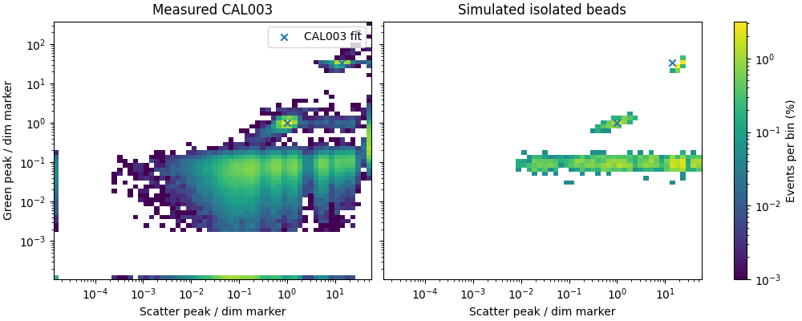

Note
Go to the end to download the full example code.
Compare Rosetta Mix marker peaks with CAL003#
The RosettaX CAL003 standard contains twelve sizes of polystyrene bead in water. Ten sizes scatter light only. The 140 nm and 380 nm populations also emit green fluorescence. Simulate the whole mixture and compare the two marker populations with the RosettaX analysis of a measured CAL003 acquisition.
The reference inputs are the Rosetta Mix definition and the CAL003 Mixture fit. The fit assigns two marker centers and leaves the other scatter peaks unsized.
from pathlib import Path
import matplotlib.pyplot as plt
import numpy as np
from matplotlib.colors import LogNorm
from FlowCyPy.detectors.photomultipliers import pmt
from FlowCyPy.dyes import fitc
from FlowCyPy.fluorescence import Bandpass, Label
from FlowCyPy.fluidics import distributions, populations
from FlowCyPy.systems.bd import facs_canto_ii
from FlowCyPy.units import ureg
Read the measured marker positions#
Rows are dim and bright, respectively. The columns are fitted LALS(Peak) and 488Grn(Peak) in instrument units. Only the green ratio is used to set the simulation inputs. The scatter ratio is reserved for comparison.
reference_peaks = np.array([[73250.3693, 9365.0087], [1008683.3714, 324468.9736]])
reference_ratios = reference_peaks[1] / reference_peaks[0]
Assemble the twelve-population sample#
RosettaX specifies diameters and refractive indices. Equal concentrations and diameter CVs of 2% and 8% are illustrative. Hold the seed, optics and mean diameters fixed when comparing these widths. FITC is a surrogate. Set the nominal dim loading to 1,000 molecules and use the measured green ratio to set the nominal bright loading. A common surface density would give a ratio of only (380/140)² = 7.37. Matching 34.65 requires about 4.70 times the surface density on the bright beads. The fixture does not identify the dye, coating mechanism, size CV or absolute loading.
diameters_nm = [70, 100, 125, 140, 147, 203, 296, 380, 400, 600, 799, 994]
marker_counts = {140: 1_000, 380: round(1_000 * reference_ratios[1])}
dye = fitc()
def build_mix(*, diameter_cv, surface_labeling):
"""Configure the instrument and its twelve bead populations.
Parameters
----------
diameter_cv : float
Diameter standard deviation divided by nominal diameter for each population.
surface_labeling : bool
Use Poisson surface loading when true and nominal fixed counts otherwise.
Returns
-------
FlowCytometer
Instrument ready to acquire the mixture.
"""
instrument = facs_canto_ii(background_power=4 * ureg.picowatt)
optics = instrument.opto_electronics
optics.detectors = [*optics.detectors, pmt(
name="Green", phi_angle=90 * ureg.degree, numerical_aperture=0.8,
signals=("fluorescence",), optical_filter=Bandpass(center=530 * ureg.nm, width=30 * ureg.nm),
)]
for diameter_nm in diameters_nm:
diameter = diameter_nm * ureg.nm
labels = ()
if diameter_nm in marker_counts:
nominal_count = marker_counts[diameter_nm]
if surface_labeling:
density = nominal_count / (np.pi * diameter**2)
label = Label(fluorophore=dye, molecules_per_area=density)
else:
label = Label(fluorophore=dye, molecules_per_particle=nominal_count)
labels = (label,)
population = populations.SpherePopulation(
name=f"{diameter_nm} nm",
diameter=distributions.Normal(mean=diameter, standard_deviation=diameter_cv * diameter),
refractive_index=1.59,
medium_refractive_index=1.333,
concentration=1e7 * ureg.particle / ureg.milliliter,
labels=labels,
)
instrument.fluidics.scatterer_collection.add_population(population)
return instrument
example_dir = Path(globals().get("__file__", "reproduce_rosetta_mix_markers.py")).resolve().parent
histogram_path = example_dir / "rosetta_cal003_peak_histogram.npz"
if not histogram_path.is_file():
histogram_path = example_dir.parents[1] / "data" / histogram_path.name
with np.load(histogram_path) as histogram:
scatter_edges = histogram["scatter_edges"]
green_edges = histogram["green_edges"]
measured_counts = histogram["counts"]
def marker_widths(*, scatter, green, center, weights=None):
"""Estimate scatter and fluorescence CV within a twofold marker gate.
Parameters
----------
scatter, green : ndarray
Paired event values or histogram bin centers for the two channels.
center : pair of float
Marker center in the corresponding channel units.
weights : ndarray, optional
Number of events represented by each pair of bin centers.
Returns
-------
ndarray
Population standard deviation divided by mean for each gated channel.
"""
relative = np.column_stack((scatter, green)) / center
inside = ((relative >= 0.5) & (relative <= 2)).all(axis=1)
gated = relative[inside]
weights = None if weights is None else weights[inside]
means = np.average(gated, axis=0, weights=weights)
return np.sqrt(np.average((gated / means - 1)**2, axis=0, weights=weights))
Separate size dispersion from surface labeling#
First broaden the diameters at fixed loading, then let larger particles carry more molecules. Report the simulated dim marker’s coefficient of variation in each channel, keeping events within a factor of two of the marker center on both axes. Apply the same gate to the measured histogram using its fitted dim center and the geometric centers of its log bins. This measures local spread, including overlapping events inside the gate. It does not determine the bead lot’s diameter CV. The last case supplies the instrument for the waveform comparison below.
scatter_grid, green_grid = np.meshgrid(
np.sqrt(scatter_edges[:-1] * scatter_edges[1:]),
np.sqrt(green_edges[:-1] * green_edges[1:]), indexing="ij",
)
scatter_cv, green_cv = marker_widths(
scatter=scatter_grid.ravel(), green=green_grid.ravel(),
center=reference_peaks[0], weights=measured_counts.ravel(),
)
print(f"Measured dim peak: scatter CV {scatter_cv:.1%}, green CV {green_cv:.1%}")
for diameter_cv, surface_labeling in [(0.02, False), (0.08, False), (0.08, True)]:
instrument = build_mix(diameter_cv=diameter_cv, surface_labeling=surface_labeling)
optics = instrument.opto_electronics
collection = instrument.fluidics.generate_event_collection(
run_time=5 * ureg.millisecond, sampling_rate=optics.digitizer.sampling_rate, random_state=42
)
optics.add_coupling_to_dataframe(event_collection=collection)
dim = collection.get_population_events("140 nm")
scatter = dim.get_quantity("SSC").m_as("pW")
green = dim.get_quantity("Green").m_as("pW")
scatter_cv, green_cv = marker_widths(
scatter=scatter, green=green, center=(np.median(scatter), np.median(green))
)
loading = "Poisson surface" if surface_labeling else "fixed"
print(f"Size CV {diameter_cv:.0%}, {loading} loading: "
f"dim optical scatter CV {scatter_cv:.1%}, green CV {green_cv:.1%}")
Measured dim peak: scatter CV 20.9%, green CV 15.2%
Size CV 2%, fixed loading: dim optical scatter CV 10.5%, green CV 1.2%
Size CV 8%, fixed loading: dim optical scatter CV 34.6%, green CV 1.2%
Size CV 8%, Poisson surface loading: dim optical scatter CV 34.6%, green CV 14.7%
Compare the measured and simulated populations#
The left panel uses the first 100,000 events of the checksum-pinned FCS
file named in the CAL003 fixture. The bundled histogram contains the joint counts
for those two raw channels in 120 logarithmic bins per axis, spanning
each channel’s positive minimum and maximum. Crosses mark the RosettaX fit.
To run a downloaded script, place the histogram next to it.
The measured event peaks
preserve the paired lals_peak and green_peak values in instrument units,
in acquisition order. The simulated event peaks
contain ssc_peak_V, green_peak_V and the bead population for
each isolated event from the example run with two OpenMP workers.
The FCS header identifies an Apogee Micro-PLUS. Here the FACSCanto II SSC channel is a proxy for LALS. Acquire noisy analog traces using an illustrative constant optical background of 4 pW per channel. Read the maximum voltage in each channel within 1 µs of each known arrival. Retain arrivals separated by at least 4 µs from their neighbors to limit pulse overlap. This selects isolated beads and omits the Micro-PLUS hardware trigger, ADC clipping and blank triggers.
peak_blocks = []
population_names = []
for seed in range(42, 50):
record = instrument.acquire(run_time=5 * ureg.millisecond, random_state=seed)
signal = record.signal.analog
time = signal["Time"].m_as("microsecond")
voltage = np.column_stack([signal[channel].m_as("volt") for channel in ("SSC", "Green")])
arrivals = [events.get_quantity("Time").m_as("microsecond") for events in record.event_collection]
names = np.repeat([events.name for events in record.event_collection], [len(times) for times in arrivals])
times = np.concatenate(arrivals)
order = np.argsort(times)
times = times[order]
gaps = np.diff(times, prepend=time[0], append=time[-1])
isolated = (gaps[:-1] >= 4) & (gaps[1:] >= 4)
starts = np.searchsorted(time, times[isolated] - 1)
stops = np.searchsorted(time, times[isolated] + 1, side="right")
peak_blocks.extend(voltage[start:stop].max(axis=0) for start, stop in zip(starts, stops, strict=True))
population_names.extend(names[order][isolated])
peaks = np.asarray(peak_blocks)
population_names = np.asarray(population_names)
marker_peaks = np.array([np.median(peaks[population_names == f"{size} nm"], axis=0) for size in marker_counts])
Put the dim marker at (1, 1) independently in each panel. The remaining displacement of the bright marker tests relative spacing. Both panels use identical bins and show the percentage of the respective sample per bin. Peaks outside the measured range are excluded from the plot and remain in the denominator. Crosses show both measured fitted centers in each panel.
scatter_bins = scatter_edges[::2] / reference_peaks[0, 0]
green_bins = green_edges[::2] / reference_peaks[0, 1]
relative_peaks = peaks / marker_peaks[0]
simulation_counts, _, _ = np.histogram2d(*relative_peaks.T, bins=(scatter_bins, green_bins))
measured_binned = measured_counts.reshape(len(scatter_bins) - 1, 2, len(green_bins) - 1, 2).sum(axis=(1, 3))
fractions = [100 * measured_binned / measured_counts.sum(), 100 * simulation_counts / len(peaks)]
norm = LogNorm(vmin=100 / measured_counts.sum(), vmax=max(values.max() for values in fractions))
figure, axes = plt.subplots(1, 2, sharex=True, sharey=True, layout="constrained", figsize=(10, 4))
for axis, values, title in zip(axes, fractions, ("Measured CAL003", "Simulated isolated beads"), strict=True):
density = axis.pcolormesh(scatter_bins, green_bins, values.T, norm=norm)
axis.scatter(*(reference_peaks / reference_peaks[0]).T, marker="x", label="CAL003 fit")
axis.set(xscale="log", yscale="log", xlabel="Scatter peak / dim marker", title=title)
axes[0].set_ylabel("Green peak / dim marker")
axes[0].legend()
figure.colorbar(density, ax=axes, label="Events per bin (%)")
plt.show()
print(f"Simulated peaks in plotted range: {int(simulation_counts.sum())} of {len(peaks)} isolated beads")
scatter_cv, green_cv = marker_widths(scatter=peaks[:, 0], green=peaks[:, 1], center=marker_peaks[0])
print(f"Simulated dim peak: scatter CV {scatter_cv:.1%}, green CV {green_cv:.1%}")
simulated_ratios = marker_peaks[1] / marker_peaks[0]
for channel, reference, prediction in zip(("Scatter", "Green"), reference_ratios, simulated_ratios, strict=True):
print(f"{channel} bright/dim: RosettaX {reference:.2f}, FlowCyPy {prediction:.2f}")

Simulated peaks in plotted range: 1532 of 1861 isolated beads
Simulated dim peak: scatter CV 30.9%, green CV 15.3%
Scatter bright/dim: RosettaX 13.77, FlowCyPy 20.43
Green bright/dim: RosettaX 34.65, FlowCyPy 29.16
Total running time of the script: (0 minutes 13.388 seconds)